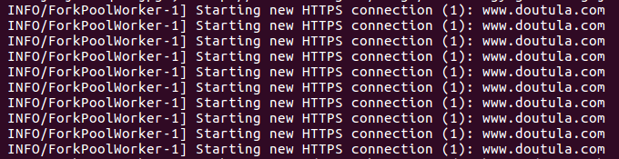

在上一篇博客中提到过对于网络爬虫这种包含大量网络请求的任务，是可以用Celery来做到加速爬取的，那么，这一篇博客就要具体说一下怎么用Celery来对我们的爬虫进行一个加速！
group这个类表示创建一组要并行执行的任务，不过一组任务是懒惰的，所以你需要运行并对其进行评估。要了解这个类，可以查看文档，或者在Pycharm中直接Ctrl+左键就能直接查看源码了，如下图：
当然了，直接看源码还不够，最好还是自己动下手。所以先创建一个test.py，其中代码如下：
1 from celery import Celery
2
3
4 app = Celery("test", broker="redis://127.0.0.1:6379", backend="redis://127.0.0.1:6379")
5
6
7 @app.task
8 def add(x, y):
9 return x + y
10
11
12 if __name__ == '__main__':
13 app.start()然后运行Celery服务器，再在test.py所在目录下创建一个test_run.py用于测试，其中代码如下：
1 from celery import group
2 from .test import add
3
4
5 lazy_group = group(add.s(2, 2), add.s(4, 4))
6 print(type(lazy_group))
7 result = lazy_group()
8 print(result)
9 print(type(result))
10 print(result.get())在Pycharm中运行test_run.py，得到的结果如下：
<class 'celery.canvas.group'>
fe54f453-eb9c-4b24-87e3-a26fab75967f
<class 'celery.result.GroupResult'>
[4, 8]
通过查看源码可以知道，是可以往group中传入一个由任务组成的可迭代对象的，所以这就进行一下测试，对上面的代码进行一点修改：
1 from celery import group
2 from CelerySpider.test import add
3
4
5 lazy_group = group(add.s(x, y) for x, y in zip([1, 3, 5, 7, 9], [2, 4, 6, 8, 10]))
6 result = lazy_group()
7 print(result)
8 print(result.get())运行之后得到了我们想要的结果：
f03387f1-af00-400b-b58a-37901563251d
[3, 7, 11, 15, 19]
在Celery中有一个类result，这个类包含了任务运行的结果和状态等，而在这个类中就有一个collect()方法，使用该方法能在结果返回时收集结果。和之前一样的步骤，先看看源码：
这里看源码也是看得一头雾水，不如动手写代码试试看。创建一个app.py，其中代码如下：
1 from celery import Celery, group, result
2
3
4 app = Celery("test", broker="redis://127.0.0.1:6379", backend="redis://127.0.0.1:6379")
5
6
7 @app.task(trail=True)
8 def A(how_many):
9 return group(B.s(i) for i in range(how_many))()
10
11
12 @app.task(trail=True)
13 def B(i):
14 return pow2.delay(i)
15
16
17 @app.task(trail=True)
18 def pow2(i):
19 return i ** 2
20
21
22 if __name__ == '__main__':
23 app.start()可以看到在设置任务的时候都加了参数trail=True，这是为了存储子任务列表运行后的结果，虽然是默认设置，但这里明确启用。在运行Celery服务器之中，进入app.py同级目录，输入python，然后执行如下代码：
>>> from app import A
>>> res = A.delay(10)
>>> [i[1] for i in res.collect() if isinstance(i[1], int)]
[0, 1, 4, 9, 16, 25, 36, 49, 64, 81]
这个爬虫项目的基本文件如下：
其中app.py用于创建Celery实例，celeryconfig.py是Celery需要使用的配置文件，tasks.py里面的则是具体的任务，crawl.py是爬虫脚本，在打开Celery服务器之后，运行此文件即可。
首先是app.py，代码如下，其中config_from_object()方法用于配置Celery，传入的参数是一个可被导入的模块：
1 from celery import Celery
2
3
4 app = Celery("spiders", include=["CelerySpider.tasks"])
5 # 导入配置文件
6 app.config_from_object("CelerySpider.celeryconfig")
7
8
9 if __name__ == '__main__':
10 app.start()下面是tasks.py中的代码，其中包含了发送请求和解析网页的代码：
1 import requests
2 from lxml import etree
3 from celery import group
4 from CelerySpider.app import app
5
6
7 headers = {
8 "Cookie": "__cfduid=d5d815918f19b7370d14f80fc93f1f27e1566719058; UM_distinctid=16cc7bba92f7b6-0aac860ea9b9a7-7373e61-144000-16cc7bba930727; CNZZDATA1256911977=1379501843-1566718872-https%253A%252F%252Fwww.baidu.com%252F%7C1566718872; XSRF-TOKEN=eyJpdiI6InJvNVdZM0krZ1wvXC9BQjg3YUk5aGM1Zz09IiwidmFsdWUiOiI5WkI4QU42a0VTQUxKU2ZZelVxK1dFdVFydlVxb3g0NVpicEdkSGtyN0Uya3VkXC9pUkhTd2plVUtUTE5FNWR1aCIsIm1hYyI6Ijg4NjViZTQzNGRhZDcxNTdhMDZlMWM5MzI4NmVkOGZhNmRlNTBlYWM0MzUyODIyOWQ4ZmFhOTUxYjBjMTRmNDMifQ%3D%3D; doutula_session=eyJpdiI6IjFoK25pTG50azEwOXlZbmpWZGtacnc9PSIsInZhbHVlIjoiVGY2MU5Ob2pocnJsNVBLZUNMTWw5OVpjT0J6REJmOGVpSkZwNFlUZVwvd0tsMnZsaiszWEpTbEdyZFZ6cW9UR1QiLCJtYWMiOiIxZGQzNTJlNzBmYWE0MmQzMzQ0YzUzYmYwYmMyOWY3YzkxZjJlZTllNDdiZTlkODA2YmQ3YWRjNGRmZDgzYzNmIn0%3D",
9 "Referer": "https://www.doutula.com/article/list/?page=1",
10 "UserAgent": "Mozilla/5.0 (Windows NT 10.0; Win64; x64) AppleWebKit/537.36 (KHTML, like Gecko) Chrome/76.0.3809.100 Safari/537.36"
11 }
12
13
14 @app.task(trail=True)
15 def main(urls):
16 # 主函数
17 return group(call.s(url) for url in urls)()
18
19
20 @app.task(trail=True)
21 def call(url):
22 # 发送请求
23 try:
24 res = requests.get(url, headers=headers)
25 parse.delay(res.text)
26 except Exception as e:
27 print(e)
28
29
30 @app.task(trail=True)
31 def parse(html):
32 # 解析网页
33 et = etree.HTML(html)
34 href_list = et.xpath('//*[@id="home"]/div/div[2]/a/@href')
35 result = []
36 for href in href_list:
37 href_res = requests.get(href, headers=headers)
38 href_et = etree.HTML(href_res.text)
39 src_list = href_et.xpath('//*[@class="artile_des"]/table/tbody/tr/td/a/img/@src')
40 result.extend(src_list)
41 return result最后是crawl.py中的代码：
1 import time
2 from CelerySpider.tasks import main
3
4
5 start_time = time.time()
6
7
8 url_list = ["https://www.doutula.com/article/list/?page={}".format(i) for i in range(1, 31)]
9 res = main.delay(url_list)
10 all_src = []
11 for i in res.collect():
12 if isinstance(i[1], list) and isinstance(i[1][0], str):
13 all_src.extend(i[1])
14
15 print("Src count: ", len(all_src))
16
17
18 end_time = time.time()
19 print("Cost time: ", end_time - start_time)此次爬取的网站是一个表情包网站，url_list就表示要爬取的url，这里我选择爬取30页来测试。all_src用于存储表情包图片的资源链接，通过collect()方法提取出要爬取的链接，然后将这些表情包下载下来，最后打印出下载的图片数量和整个程序所耗费的时间。
当运行Celery服务后，再运行crawl.py文件，会看到如下信息打印出来：

当整个爬虫运行完毕后，会打印出所耗费的时间：
完整代码已上传到GitHub！